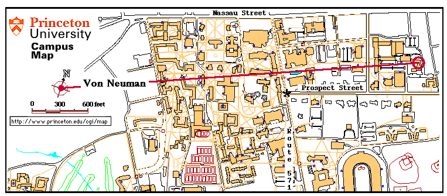
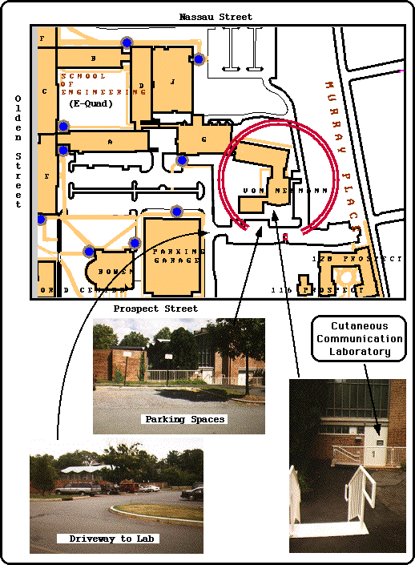

Directions to the Princeton Cutaneous Communication Laboratory

The Cutaneous Communication Laboratory was located on the Princeton University campus in the lower level of the von Neumann Building, at the far (Northeast) end of the Engineering Quadrangle. If you
are traveling from off campus, see the University travel page, which gives instructions to Princeton from all directions and modes of travel. Once you arrive on campus, probably traveling on either Nassau Street (Route 27) or Washington Road (Route 571), the two maps below should help you to understand the following description. For students on campus, the most direct route to the Laboratory starting at the intersection of Washington Road and Prospect Street (marked by a large asterisk on the first map), would be to walk down Prospect Street, away from the main campus, past most of the eating clubs, past Bowen Hall, to the first driveway (on the left) after the Third World Center on Olden Street. If you reach the Computing Center's driveway (on your right), you've traveled too far. Turn into the first driveway, on the left, at the end of the tall wall on your left and walk towards the Engineering Quad, past the parking garage on the left. The peaked glass-front building to your right is von Neumann. By continuing to walk down the drive towards the building, taking the first right, and walking past the serpentine (zig-zag) wall, you will arrive at the loading ramp (rear) entrance to the building. Our white-door entrance is marked by a black sign, as indicated below. Come in that door, go straight down the hall, and our door is B1, on your right. Ring the doorbell and
Welcome to the Cutaneous Laboratory!
To see what happens during a typical test session, click >>> here <<<


Return to Cutaneous Lab Home Page